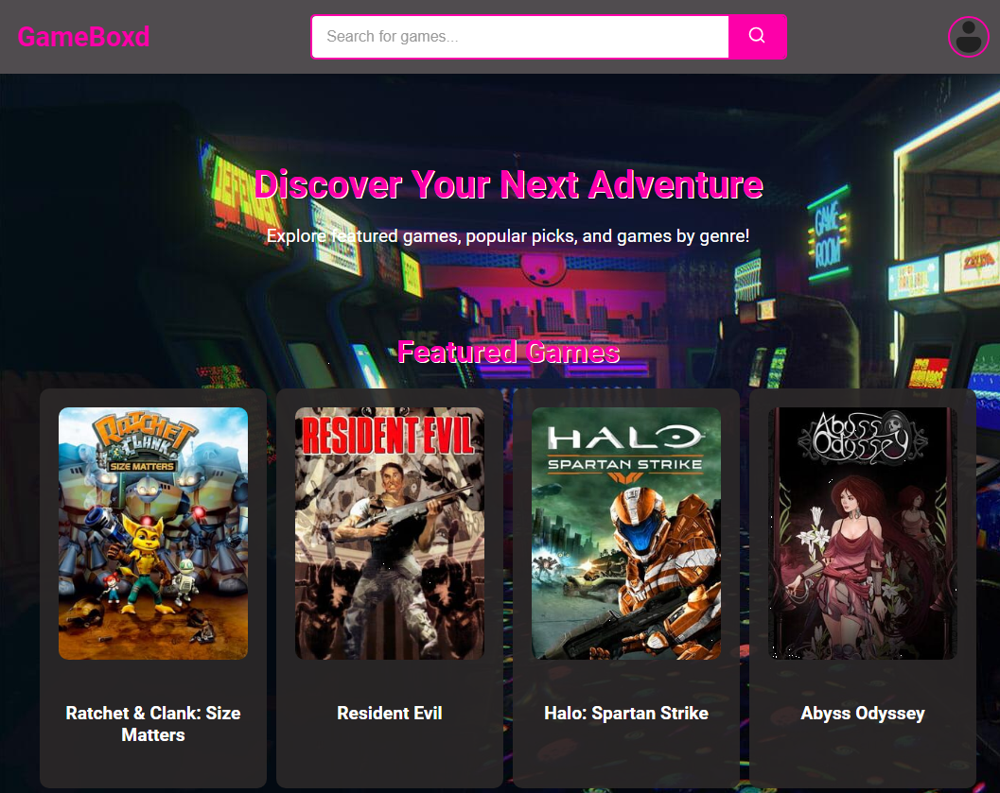
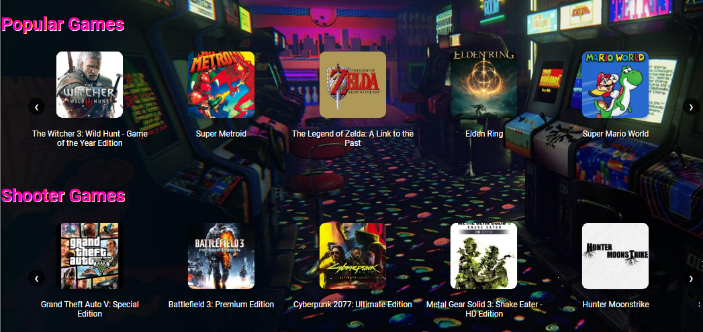
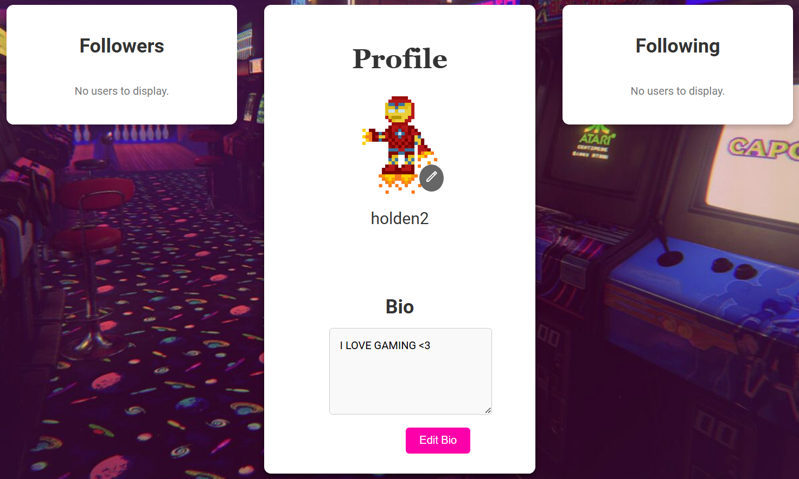

GameBoxd Report
CS 3300: Group 12
Introduction/Background
Our aim for Project 2 was to build a social cataloging platform, similar to Letterboxd, for video game enthusiasts, providing features such as game cataloging, reviews, ratings, and creating/viewing lists. Furthermore, we also included the additive feature of AI-generated game descriptions, seeking to provide a more genuine and honest take on what each game offers. This platform seeks to bridge the gap between gamers and their desire to share experiences, discover new games, and engage with a community that values thoughtful discussions and curation. By offering tools for users to write reviews, rate titles, and craft personalized lists, the platform aspires to become a go-to destination for gaming enthusiasts to connect and explore.
To achieve this, we employed a technology stack tailored for scalability, usability, and performance. The backend is powered by Node.js and Express, providing a robust and flexible API layer to handle user interactions and data storage. For the database, we chose MongoDB, which allows for efficient handling of the semi-structured data typical in game metadata, user reviews, and ratings. The frontend is built using React.js, delivering a responsive and interactive user experience.
This project is significant because it addresses the lack of a centralized platform where gamers can both curate their personal game collections and interact socially around shared interests. Existing platforms like Metacritic and IGN offer reviews and ratings but lack the personalized cataloging and community-driven features central to our project. Our approach combines the best elements of social media and cataloging platforms, providing a unique space for gamers to engage.
The scope of the project includes the development of core features like user registration/login, game search and cataloging, review and rating submission, and the ability to create and share lists. We also plan to implement social features such as following other users and interacting with their reviews and lists. Our project management approach follows an Agile methodology, emphasizing iterative development, frequent user feedback, and adaptability to changing requirements.
Software Technologies
Technologies and Frameworks
- IGDB API: The IGDB (Internet Game Database) API was integral to our platform, serving as the primary source for game metadata. It provides a comprehensive database of video game information, including titles, genres, platforms, and cover art. The IGDB API was chosen for its reliability, extensive dataset, and ease of integration, enabling users to quickly find accurate and detailed information about their favorite games or discover new ones to explore.
- Jest: For testing, we utilized Jest, a widely used JavaScript testing framework. Jest was chosen for its simplicity, fast performance, and powerful mocking capabilities. It allowed us to implement unit tests efficiently, ensuring the reliability of our platform’s core functionalities, from API interactions to user-generated content features like reviews and lists.
AI Tools
- Github Copilot: Played a crucial role in streamlining development. It provided context-aware code suggestions and assisted with boilerplate generation, enabling us to work more efficiently and focus on complex problem-solving. Copilot was particularly helpful when integrating the IGDB API and implementing user-facing features, reducing development time while improving code quality.
- ChatGPT API: The ChatGPT API was used to generate AI-driven game descriptions. This tool added significant value to the platform by offering personalized, marketing-free summaries that highlight the core reasons why a player might enjoy a particular game. The ChatGPT API was selected for its state-of-the-art language processing capabilities and its ability to deliver high-quality, natural language outputs tailored to our audience’s preferences.
Requirements
Functional Requirements (MMFs)
- Game Catalog Browsing: Enable users to access a comprehensive database of video games through the IGDB API. Provide search and filter options based on genre, platform, and other relevant criteria. Display detailed game information, including title, cover art, description, and release date.
- Game Rating and Reviewing: Allow users to rate games on a 5-star scale. Enable users to write and submit textual reviews. Display aggregated ratings and user-submitted reviews for each game.
- Personal Game Lists and Cataloging: Allow users to organize games into pre-defined lists such as “Played,” “Currently Playing,” and “Want to Play.” Provide functionality for users to create custom lists for specialized game collections. Support sharing lists with others or keeping them private based on user preference.
- AI-Generated Game Descriptions: Use the ChatGPT API to generate marketing-free, authentic game descriptions. Provide insights on why users might enjoy a game, focusing on gameplay, story, and overall experience.
Non-Functional Requirements
- Performance: Ensure smooth and fast interaction with the IGDB API and minimal latency in loading game information and AI-generated descriptions.
- Scalability: Design the platform to handle a growing number of users and expanding game data efficiently.
- User Experience: Maintain a clean, intuitive interface that enables effortless navigation and interaction.
- Security: Protect user data and ensure the security of login credentials through encrypted authentication mechanisms.
Process of Identifying and Prioritizing Requirements
The process of identifying and prioritizing requirements for our platform was guided by a user-centric approach, aiming to replicate the core functionality of platforms like Letterboxd while introducing unique features tailored to video game enthusiasts. Our research into Letterboxd's success highlighted the importance of allowing users to catalog their collections, rate and review items, and create personalized lists. We sought to adapt this model for video games, focusing on features like game cataloging and custom lists that reflect gamers' specific needs. However, we also recognized an opportunity to go beyond simple cataloging by leveraging AI-generated descriptions to enhance discovery. The AI-generated descriptions were prioritized because they provide suggestive, marketing-free insights into why a game might be enjoyable, helping users not only catalog games they already know but also discover new titles that align with their interests. By offering genuine information about gameplay, story, and mechanics, this feature bridges the gap between exploration and organization, setting our platform apart from existing solutions.
Design

The design of our application is centered around creating a user-friendly, visually engaging, and community-driven platform that enhances the gaming experience.
Every design decision reflects our commitment to usability, scalability, and fostering connections amongst gamers. Let’s dive into the details of how the design achieves this.
 Our system is meticulously designed using a React.js frontend, a Node.js/Express-powered backend, and a MongoDB database connected via the Mongoose Object Relational Mapper (ORM).
This architecture allows seamless communication between the frontend and backend through structured HTTP requests, enabling users to interact effortlessly with the system. Key features
such as the GameCard and StarRating components enhance the user experience by dynamically rendering relevant game information and user-generated ratings.
The backend, powered by Node.js and Express, serves as the core of business logic and interfaces with multiple external APIs, including the IGDB API for fetching game details and the
OpenAI API for generating AI-enhanced game descriptions. By leveraging Mongoose as the ORM, we simplify database operations, using JavaScript objects as schemas to streamline interactions
with MongoDB. This approach ensures efficient resource management and facilitates scalability while maintaining consistency throughout the application.
The layered design of the system promotes modularity and clarity. The frontend handles user interactions and dynamically renders content, while the backend orchestrates API calls,
processes data, and communicates with the database. This separation of concerns allows each layer—frontend, backend, and database—to be developed, tested, and scaled independently,
reducing complexity and enhancing maintainability. By isolating responsibilities, we create a robust framework that minimizes development headaches and accelerates iteration cycles,
ensuring a polished and responsive application.
Our system is meticulously designed using a React.js frontend, a Node.js/Express-powered backend, and a MongoDB database connected via the Mongoose Object Relational Mapper (ORM).
This architecture allows seamless communication between the frontend and backend through structured HTTP requests, enabling users to interact effortlessly with the system. Key features
such as the GameCard and StarRating components enhance the user experience by dynamically rendering relevant game information and user-generated ratings.
The backend, powered by Node.js and Express, serves as the core of business logic and interfaces with multiple external APIs, including the IGDB API for fetching game details and the
OpenAI API for generating AI-enhanced game descriptions. By leveraging Mongoose as the ORM, we simplify database operations, using JavaScript objects as schemas to streamline interactions
with MongoDB. This approach ensures efficient resource management and facilitates scalability while maintaining consistency throughout the application.
The layered design of the system promotes modularity and clarity. The frontend handles user interactions and dynamically renders content, while the backend orchestrates API calls,
processes data, and communicates with the database. This separation of concerns allows each layer—frontend, backend, and database—to be developed, tested, and scaled independently,
reducing complexity and enhancing maintainability. By isolating responsibilities, we create a robust framework that minimizes development headaches and accelerates iteration cycles,
ensuring a polished and responsive application.
Home Page Design
Game Card and AI-Generated Descriptions
The Game Card is a pivotal feature of the application, seamlessly blending functionality and user engagement. This component dynamically showcases detailed game information, including user reviews, ratings, release dates, and screenshots. It also incorporates AI-generated descriptions, providing users with rich, context-aware summaries of games. These descriptions are crafted using data like genres, gameplay mechanics, and screenshots, ensuring users make informed decisions. The Game Card also enables players to leave reviews, rate games, and add them to personalized lists, fostering interaction and building a sense of community. Its visually appealing design and interactivity enrich the overall user experience, making it a standout feature of the platform.
Personal Profile Page
Design Patterns Implementation
Singleton Pattern
The singleton design pattern is used in many different segments of the backend for one primary reason: Providing a single instance of an object throughout the codebase that allows for global management of database state. It also provides marginal improvements in resource allocation and performance when compared to the alternative of opening and closing database conenctions in several different areas of the code.
Code Example 1 (server/server.js:8)
// Connect to MongoDB
mongoose.connect(process.env.MONGO_URI, {
useNewUrlParser: true,
useUnifiedTopology: true,
})
.then(() => {
console.log('Connected to MongoDB');
// Create and start the Express app
const app = createApp();
app.listen(PORT, () => {
console.log(`Server is running on port ${PORT}`);
});
})
The above code snippet shows our backend code making a single connection to our MongoDB database prior to instantiating the app. This connection is then used globally throughout the application via the Mongoose ORM library.
Code Example 2 (server/models/Game.js)
const mongoose = require('mongoose');
const gameSchema = new mongoose.Schema({
igdb_id: Number,
name: String,
genres: [String],
release_date: Date,
cover_url: String,
screenshot_urls: [String],
similar_games: [Number],
total_rating: Number,
total_rating_count: Number,
summary: String,
website_urls: [String],
platforms: [String]
});
const Game = mongoose.model('Game', gameSchema);
module.exports = Game;
Code Example 2 shows the instantiation of a Game model object that it subsequently exported and used as a database access object throughout the codebase, exemplifying the usage of the singleton design pattern.
Overall, the usage of the singleton pattern throughout the backend API code made interfacing with the database significantly easier by reducing the effort required to make database transactions.
Factory Pattern
The factory pattern was also used in the process of simplifying database access in the backend code. By defining our data models using Mongoose schemas, we were able to completely abstract the logic required for interfacing with a variety of MongoDB collections.
As seen in code example 2, using the factory pattern to instantiate models out of schema objects allowed us to centralize the creation logic for models making adjustments and additions to small fields in the MongoDB collections very simple. This pattern in tandem
with the singleton pattern made the construction of the database structure as well as the interaction throughout execution very simple.
Additionally, the factory pattern was used in our script for loading game data from the external IGDB API into our Mongo collection. Below, code example 3 shows the implementation of a fetchAndSaveIGDBData function that acquires data from the API, and then based
on the contents of the fetched data, creates game objects with a variety of attributes. Thus, this function is used to create objects without directly specifying the exact class or implementation details of the object being created.
Code example 3 (server/scripts/loadFullIGDBData.js)
async function fetchAndSaveIGDBData() {
try {
const token = await getOAuthToken();
const games = await fetchGames(token, 500, 1000); // Adjust limit and offset as needed
console.log(`Fetched ${games.length} games`);
for (const game of games) {
console.log(`Processing Game: ${game.name}`);
const realGame = {
igdb_id: game.id,
name: game.name,
release_date: game.first_release_date ? new Date(game.first_release_date * 1000) : null,
genres: game.genres.map((genre) => genre.name),
cover_url: game.cover ? game.cover.url : null,
screenshot_urls: game.screenshots.map((screenshot) => screenshot.url),
similar_games: game.similar_games,
total_rating: game.total_rating,
total_rating_count: game.total_rating_count,
summary: game.summary,
website_urls: game.websites.map((website) => website.url),
platforms: game.platforms.map((platform) => platform.name),
};
await Game.create(realGame);
}
}
}
Decorator Pattern
Finally, the decorator pattern was also used to aid the database interaction process, specifically when a new user registers. By using Mongoose schemas pre function,
we were able to add additional functionality and middleware during the database object creation process. This decorator pattern was applied for two primary reasons:
1) Password Hashing server/models/user.js:38
userSchema.pre('save', async function (next) {
if (!this.isModified('password')) return next();
this.password = await bcrypt.hash(this.password, 10);
next();
});
In order to securely store our users' data, it is imperative that passwords are adequetly encrypted via hashing prior to their insertion into the database. As such, we used a decorator function on our userSchema to call the BCrypt library's hash function on the password.
2) Creation of default attributes for users server/models/user.js:44
userSchema.pre('save', async function (next) {
if (this.isNew) {
const defaultLists = ['Played', 'Currently Playing', 'Want to Play'];
const lists = await Promise.all(defaultLists.map(async (name) => {
const list = new List({ name, user: this._id });
await list.save();
return list._id;
}));
this.lists = lists;
}
next();
})
We also used the same function on the userSchema in order to create 3 default "list" objects for users- "Played", "Currently Playing", and "Want to Play". Using the decorator pattern here made it very simple to modify and append data to objects prior to their insertion into the database.
Testing Strategy, Execution, AI tool analysis
Test Strategy
We implemented a testing strategy for GameBoxd that incorporated both blackbox and whitebox testing strategies. We employed Blackbox testing to validate external system behaviors this was done by not focusing on user inputs and expected outputs without delving into the internal code structure. Furthermore, with Whitebox testing, we targeted the internal logic and pathways to ensure all individual components and integrations of our applications were functioning as intended.
Blackbox Testing
With our Blackbox testing strategy we focused on validating the external functionalities of the system, including user registration, login, and user interaction features like searching for users or retrieving user details by ID.
We conducted the testing process with Postman to simulate API requests and validate responses. These tests ensured that the system behaved as expected when interacting with external inputs under various scenarios.
We applied our ai-generated tests using GPT-4 to generate and refine test cases for common scenarios and potential edge cases, while also manually creating test cases ensured comprehensive coverage of more nuanced conditions.
For the registration functionality, we executed several test cases to ensure robust validation and error handling. The POST request to /api/auth/register with valid data successfully registered a new user, returning the 201 status code the message "User registered successfully."
Another test case we created confirmed that attempting to register with an existing username resulted in a 400 status code and the error message "Username already exists."
The other test cases validated the handling of incomplete input; for example, a registration request missing a username or password correctly returned a 400 status code with the message "Username and password are required."
We tested Login functionality similarly with various scenarios.
With our tests successful login with valid credentials returned a 200 status code and the message "Login successful."
However, for our tests on login attempts with incomplete input, such as a missing username or password, result n a 400 status code with the error message "Username and password are required."
Tests also covered invalid credentials: a non-existent username returned a 404 status code and the message "User not found," while an incorrect password produced a 401 status code and the message "Invalid password."
Our search functionality, accessed via /api/auth/search, was tested for accuracy and proper error handling. A GET request with a valid query returned a list of matching users and a 200 status code, verifying the system's ability to filter user data effectively.
Conversely, a missing query parameter appropriately returned a 400 status code and the message "Username is required."
We also implemented tests for retrieving user details by ID validated the system’s ability to fetch data accurately.
A GET request to /api/auth/:id with a valid user ID returned the expected user information and a 200 status code.
In contrast, we created a test for invalid or non-existent user ID resulted in a 404 status code with the message "User not found."
These test cases collectively ensured the reliability and robustness of the system's core functionalities by simulating real-world user interactions and validating appropriate system responses across various scenarios.
Whitebox Testing
Our white box testing pushed us towards the internal code and logic of the application, ensuring that each function and component behaved as intended.
The testing process employed Jest for unit and integration testing, which validated individual API endpoints and the interaction between the backend and the MongoDB database.
We used Github Copilot and GPT-4 to generate initial test scripts, providing a quick and structured foundation for test cases.
However, manual refinement was necessary to enhance test coverage and address nuances not captured by the AI-generated cases.
This method ensured that the internal workings of the application were robust and reliable.Whitebox testing focused on ensuring the correct execution of internal logic.
For instance, a happy path test for the /api/auth/register endpoint verified that a user could be successfully registered and stored in the database when provided with valid inputs.
The expected and actual results aligned, confirming the test as a pass. Another test case examined the behavior of the login endpoint when an incorrect password was submitted.
The system returned a 401 status code and the message "Invalid password," meeting the expected result and passing the test.
These tests highlighted the reliability of the internal logic under both expected and erroneous conditions.
AI Tools in Testing
Our white box testing focused on the internal code and logic of the application, ensuring that each function and component behaved as intended.
This testing approach employed Jest for unit and integration testing, validating the functionality of API endpoints and their interactions with the MongoDB database.
To streamline the initial development of test scripts, we used GitHub Copilot and GPT-4, which provided structured and efficient foundations for test cases.
However, manual refinement was necessary to ensure comprehensive coverage and through these manual changes we addressed nuances not captured by the AI.
We focused on White box testing by examining the /api/auth/register endpoint to validate the registration functionality.
We also focused on the user story such that the "happy path" test confirmed that a new user could be registered and stored in the database when provided with valid inputs, returning a 201 status code and the message "User registered successfully."
We handled edge cases, by creating a test for duplicate usernames ensured that attempted to register an already existing username returned a 400 status code and the error message "Username already exists."
Additional tests verified that incomplete input, such as missing a username or password, appropriately returned a 400 status code with the error message "Username and password are required," ensuring consistent validation across different input scenarios.
The /api/auth/login endpoint underwent rigorous testing to validate its functionality.
We set up our successful login with valid credentials returned a 200 status code and the message "Login successful," which allowed us to confirm working login functionality.
The edge cases we included incomplete handle the input scenarios where a missing username or password correctly returned a 400 status code with the message "Username and password are required."
Our tests also validated error handling for invalid credentials: a non-existent username returned a 404 status code with the message "User not found," while an incorrect password resulted in a 401 status code and the message "Invalid password."
These tests ensured robust validation and error handling for the login feature.
The user search functionality, we implemented via the /api/auth/search endpoint, was tested for its ability to handle both valid and invalid queries.
We increase valid search query returned a 200 status code and a list of matching users, confirming the functionality of the search feature. On the other hand, a missing query parameter resulted in a 400 status code with the error message "Username is required," validating the endpoint's ability to handle invalid input gracefully.
We also tested for retrieving user details by ID through the /api/auth/:id endpoint verified the system’s ability to accurately fetch user data.
A GET request with a valid user ID successfully returned the user’s details with a 200 status code, ensuring proper functionality. There is also the output that an output invalid or non-existent user ID correctly returned a 404 status code with the message "User not found," demonstrating reliable error handling for invalid inputs.
The white box testing cases that we have created deeply test what we have implemented in the backend, ensuring that the internal logic and pathways are functioning as intended.
By combining AI-generated test scripts with manual refinements, the testing process ensured a thorough and reliable evaluation of all core functionalities, highlighting the robustness and reliability of the system's internal structure.
Comparative Analysis: AI vs Human Test Generation
Performance Metrics
By using AI-assisted test generation we significantly reduced the time required to create test cases compared to human manual efforts. For instance, by our generation of a test case for "Register User (Valid Input)" took only 0.25 minutes with AI, while it took 12 minutes manually. Similar reductions were observed across all test scenarios, with AI-generated times consistently under 1 minute while human-generated times ranged from 8 to 15 minutes. This drastic reduction in time allowed for more iterations and faster development cycles.
Usability
When we were using AI tools like GPT-4o and GitHub Copilot provided structured and efficient templates for test cases. These tools streamlined the process, especially for repetitive or straightforward scenarios such as validating user input or error handling. However, when we needed to address nuanced edge cases and ensure comprehensive test coverage, particularly for scenarios involving complex business logic, we needed to jump in and manually refine the test cases. This manual refinement was essential to ensure the accuracy and reliability of the tests.
Impact on Quality
While AI-generated test cases were consistent and well-structured, they occasionally missed complex edge cases or required additional refinement to ensure correctness. Human-generated tests, specifically depending on whether the developer could address all aspects of the test that they were intending to address, provided more comprehensive coverage and addressed nuanced scenarios effectively. By combining AI-generated test cases with manual refinement, the team achieved a balance of speed and quality.
Metrics and Statistical Evidence
| Test Case | AI-Generated Time (minutes) | Human-Generated Time (minutes) |
|---|---|---|
| Register User (Valid Input) | 0.25 | 12 |
| Register User (Duplicate Username) | 0.4 | 15 |
| Register User (Missing Username) | 0.35 | 10 |
| Register User (Missing Password) | 0.3 | 8 |
| Login (Valid Credentials) | 0.25 | 14 |
| Login (Missing Username) | 0.3 | 13 |
| Login (Missing Password) | 0.4 | 15 |
| Login (Invalid Password) | 0.35 | 12 |
| Login (Non-Existent User) | 0.5 | 10 |
| Search Users (Valid Query) | 0.45 | |
| Search Users (Missing Query Parameter) | 0.35 | |
| Retrieve User by ID (Valid ID) | 0.3 | |
| Retrieve User by ID (Non-Existent ID) | 0.4 | 15 |
Conclusion
Our comparative analysis demonstrates that AI tools significantly enhance productivity because they significantly reduce generation time. However, the quality of AI-generated tests depends on human refinement to address complex scenarios and ensure comprehensive coverage, this also causes AI to miss a lot of the deeper test cases but humans to also miss test cases that AI may produce. By taking a look at all of the strengths of AI and manual testing provides the optimal balance of speed, usability, and quality for software testing.
Challenges and Innovations
One of the significant challenges faced during the development of GameBoxd was the integration of the IGDB API. Managing rate limits and ensuring the accurate retrieval of game metadata required careful planning. The team implemented caching mechanisms and optimized the frequency of API calls to overcome this hurdle. Scalability concerns also posed a challenge, as designing the platform to accommodate a growing user base and expanding data volumes demanded a robust technology stack. The adoption of MongoDB for flexible data handling and React.js for a scalable frontend architecture effectively addressed these concerns. Implementing AI-generated descriptions using the ChatGPT API added another layer of complexity. Ensuring that the generated content was meaningful, unbiased, and relevant required iterative testing and fine-tuning of prompts to achieve high-quality outputs.
Balancing speed and quality in the testing process was another notable challenge. While AI tools like GPT-4 and GitHub Copilot significantly accelerated test generation, manual refinement was essential to address edge cases and ensure comprehensive test coverage. Designing a user-friendly interface that worked seamlessly across desktop and mobile devices also required multiple iterations based on user feedback to optimize the user experience. Despite these challenges, the project introduced several innovations. The integration of AI-generated game descriptions provided users with unique, marketing-free insights into games, enhancing discovery and engagement. The use of design patterns such as Singleton, Factory, and Decorator streamlined backend development, improved code maintainability, and facilitated efficient database interactions. Additionally, leveraging AI-assisted tools for test generation reduced development time and allowed the team to focus on enhancing test coverage. Features like real-time search with auto-suggestions and curated game carousels contributed to a dynamic and engaging browsing experience, setting the platform apart from existing solutions.
Project Outcomes and Evaluation
Achievements
- Feature Implementation
- Successfully implemented the game cataloging, rating, and reviewing features, allowing users to interact with games seamlessly.
- Developed functionality for AI-generated game descriptions, providing users with unique, marketing-free insights into games.
- Integrated a robust user list system, enabling gamers to organize games into predefined or custom categories.
- Technological Success
- Built a scalable and efficient backend using Node.js and Express, ensuring fast and reliable API responses.
- Leveraged MongoDB for flexible and high-performance data storage.
- Used the IGDB API effectively to populate game metadata while managing rate limits and caching mechanisms.
- Enhanced Usability
- The React.js frontend provided a responsive and engaging interface that seamlessly integrates with backend services.
- Implemented real-time search with auto-suggestions, allowing users to find games quickly and efficiently.
- Created visually engaging components like dynamic carousels, enhancing the browsing experience.
- Testing and Reliability
- Adopted a combination of blackbox and whitebox testing strategies to ensure robustness across core functionalities.
- Utilized AI tools like GPT-4 and GitHub Copilot to accelerate test case generation while refining manually for nuanced edge cases.
- Achieved strong error handling and validation for features like user registration, login, and game search.
Challenges Addressed
- Scalability: Designed the platform to handle increasing user loads by implementing efficient database and API interaction patterns.
- Security: Ensured encrypted authentication for user data, safeguarding against vulnerabilities.
- AI Integration: Fine-tuned prompts for the ChatGPT API to deliver meaningful, unbiased game descriptions.
User Feedback and Community Impact
- Positive Reception: User feedback emphasized appreciation for the platform’s intuitive interface, robust features, and the unique AI-driven descriptions.
- Community Engagement: The platform fostered a sense of community among gamers, with users actively cataloging games and sharing personalized lists.
Future Directions
- Enhanced Social Features
- Introduction of direct messaging and discussion forums to encourage user interaction.
- Support for collaborative list creation, fostering group engagement and shared curation.
- Mobile Application Development
- Development of dedicated iOS and Android apps for enhanced accessibility and improved user experiences.
- Advanced AI Capabilities
- Implementation of personalized game recommendations based on user preferences, playing history, and trends within the community.
- Additional Content Integration
- Inclusion of developer interviews, behind-the-scenes content, and historical insights to enrich the platform’s value.
- Gamification and Monetization
- Introduction of gamification elements like leaderboards, badges, and achievements.
- Exploration of monetization strategies, such as premium subscriptions and partnerships with game publishers.
Future Directions
Looking ahead, there are several enhancements and expansions planned for GameBoxd. One key direction is the development of enhanced social features, including direct messaging, collaborative list creation, and discussion forums. These additions aim to foster a more interactive community and encourage greater user engagement. Another priority is the creation of dedicated iOS and Android applications to improve accessibility and enhance the user experience on mobile devices. The integration of advanced AI capabilities is also planned, such as personalized game recommendations based on user preferences, playing history, and community trends. This feature would add significant value by tailoring content to individual users.
To enrich the platform further, additional APIs or data sources could be integrated to provide more comprehensive game metadata, including developer interviews, behind-the-scenes content, and historical insights. Monetization opportunities could also be explored, such as offering premium subscriptions for ad-free experiences, exclusive content, or partnerships with game publishers for sponsored recommendations. Gamification elements like badges, leaderboards, and achievements could be introduced to incentivize user engagement and create a sense of community accomplishment.